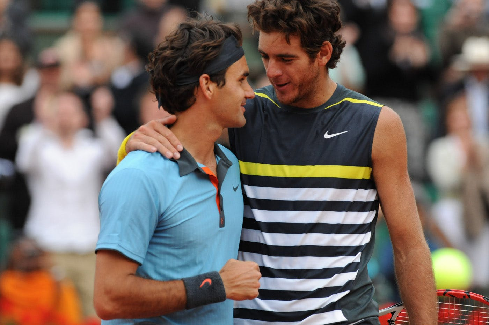
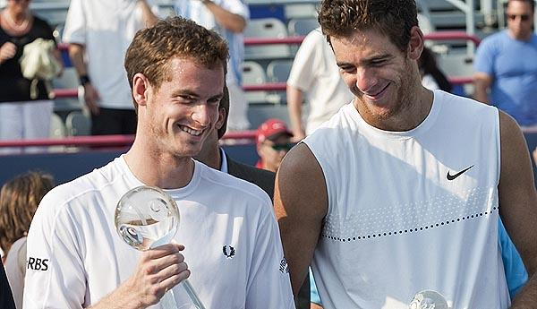
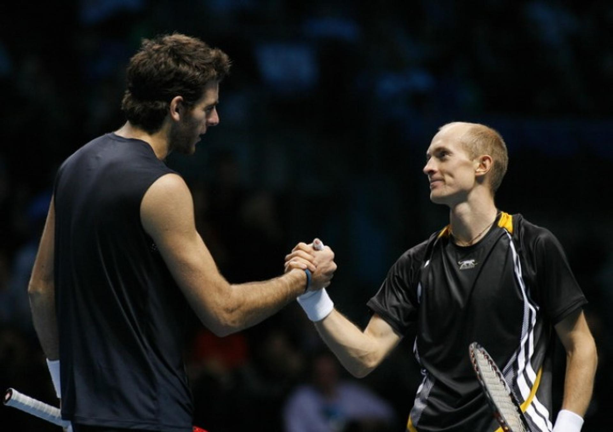
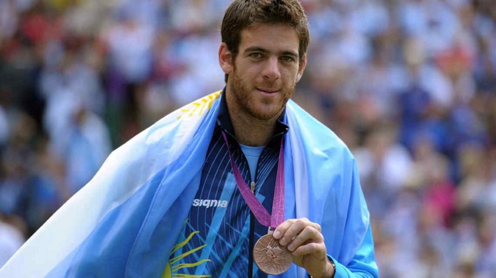
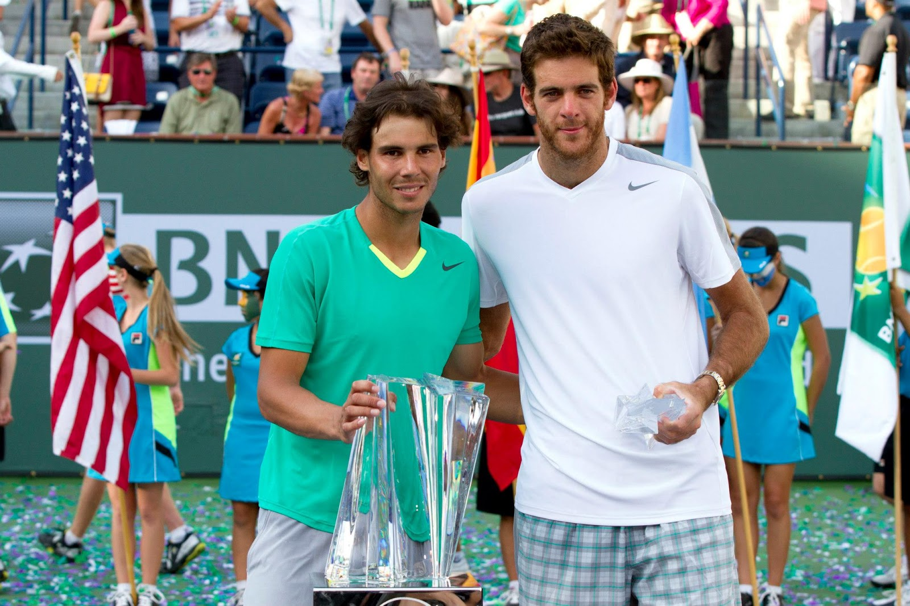
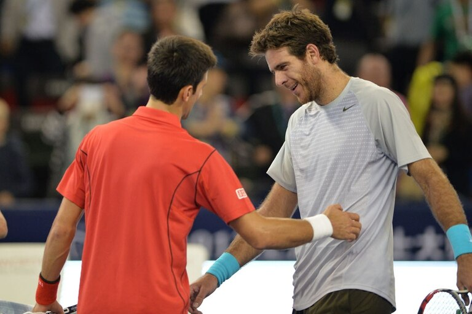
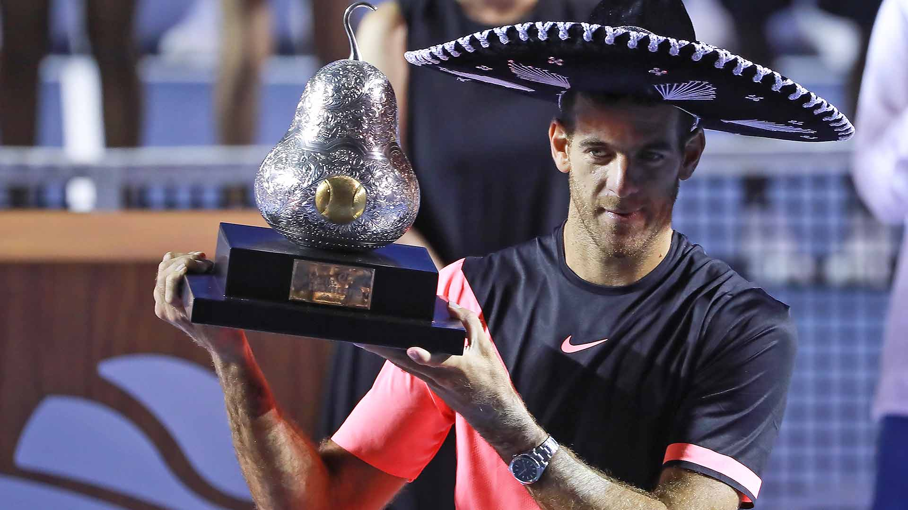
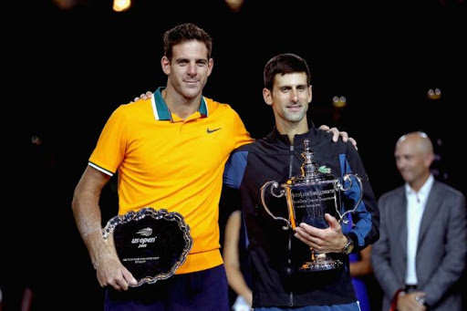

TORNEOS DESTACADOS, EN IMAGÉNES


Semifinales Roland Garros 2009
Finalista Masters 1000 Montreal 2009


Finalista ATP World Tour Finals 2009
Medalla de Bronce JJ.OO. Londres 2012


Finalista Masters 1000 Indian Wells 2013
Finalista Masters 1000 Shanghai 2013


Campeón del ATP 500 de Acapulco 2018
Finalista del US Open 2018